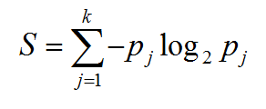

Decision Tree (Pohon Keputusan)¶
Pohon keputusan adalah salah satu metode klasifikasi yang paling popular karena mudah untuk diinterpretasi oleh manusia. Konsep dari pohon keputusan adalah mengubah data menjadi pohon keputusan dan aturan-aturan keputusan.
Kelebihan dan Kekurangan Decision Tree¶
kelebihan :
-
Daerah pengambilan keputusan yang sebelumnya kompleks dan sangat global, dapat diubah menjadi simple dan spesifik.
-
Eliminasi perhitungan-perhitungan yang tidak diperlukan, karena ketika menggunakan metode pohon keputusan maka contoh diuji hanya berdasarkan kriteria atau kelas-kelas tertentu.
-
Fleksibel untuk memilih fitur dari internal node yang berbeda, fitur yang terpilih akan membedakan suatu kriteria dibandingkan kriteria yang lain dalam node yang sama.
-
Metode pohon keputusan dapat menghindari munculnya permasalahan ini dengan menggunakan kriteria yang jumlahnya lebih sedikit pada setiap node internal tanpa banyak mengurangi kualitas keputusan yang dihasilkan.
Kekurangan :
-
Terjadi overlap terutama ketika kelas-kelas dan kriteria yang digunakan jumlahnya sangat banyak. Hal tersebut juga dapat menyebabkan meningkatnya waktu pengambilan keputusan dan jumlah memori yang diperlukan
-
Pengakumulasian jumlah eror dari setiap tingkat dalam sebuah pohon keputusan yang besar.
-
Kesulitan dalam mendesain pohon keputusan yang optimal
-
Hasil kualitas keputusan yang didapatkan dari metode pohon keputusan sangat tergantung pada bagaimana pohon tersebut didesain.
Arsitektur Pohon Keputusan¶
Arsitektur pohon keputusan dibuat menyerupai bentuk pohon, dimana pada umumnya sebuah pohon terdapat akar (root), cabang dan daun (leaf). Pada pohon keputusan juga terdiri dari tiga bagian sebagai berikut :
a. Root node atau node akar merupakan node yang terletak paling atas dari suatu pohon.
b. Internal Node ini merupakan node percabangan, dimana pada node ini hanya terdapat satu input dan mempunyai minimal dua output.
c. Leaf Node ini merupakan node akhir, hanya memiliki satu input, dan tidak memiliki output. Pada pohon keputusan setiap leaf node menandai label kelas.
Gambar berikut merupakan bentuk arsitektur pohon keputusan.

Algoritma ID3¶
Algoritma ID3 merupakan algoritma yang dipergunakan untuk membangun sebuah decision tree atau pohon keputusan. Decision tree menggunakan struktur hierarki untuk pembelajaran supervised. Proses dari decision tree dimulai dari root node hingga leaf node yang dilakukan secara rekursif. Dimana setiap percabangan menyatakan suatu kondisi yang harus dipenuhi dan pada setiap ujung pohon menyatakan kelas dari suatu data.
Langkah-Langkah Konstruksi Pohon Keputusan dengan Algoritma ID3¶
Langkah 1 : Pohon dimulai dengan sebuah simpul yang mereperesentasikan sampel data pelatihan yaitu dengan membuat simpul akar.
Langkah 2 : Jika semua sampel berada dalam kelas yang sama, maka simpul ini menjadi daun dan dilabeli menjadi kelas. Jika tidak, information gain akan digunakan untuk memilih atribut terbaik dalam memisahkan data sampel menjadi kelas-kelas individu.
Langkah 3 : Cabang akan dibuat untuk setiap nilai pada atribut dan data sampel akan dipartisi lagi.
Langkah 4 : Algoritma ini menggunakan proses rekursif untuk membentuk pohon keputusan pada setiap data partisi. Jika sebuah atribut sduah digunakan disebuah simpul, maka atribut ini tidak akan digunakan lagi di simpul anak-anaknya.
Langkah 5 : Proses ini berhenti jika dicapai kondisi seperti berikut :
– Semua sampel pada simpul berada di dalam satu kelas
– Tidak ada atribut lainnya yang dapat digunakan untuk mempartisi sampel lebih lanjut. Dalam hal ini akan diterapkan suara terbanyak. Ini berarti mengubah sebuah simpul menjadi daun dan melabelinya dnegan kelas pada suara terbanyak.
Entropy & Information Gain¶
Algoritma pada metode ini menggunakan konsep dari entropi. Konsep Entropi yang digunakan untuk mengukur “seberapa informatifnya” sebuah node (yang biasanya disebut seberapa baiknya).
Entropi(S) = 0, jika semua contoh pada S berada dalam kelas yang sama.
Entropi(S) = 1, jika jumlah contoh positif dan jumlah contoh negatif dalam S adalah sama. 0 < Entropi(S) < 1, jika jumlah contoh positif dan negatif dalam S tidak sama.

Dimana: • S adalah himpunan (dataset) kasus • k adalah banyaknya partisi S • pj adalah probabilitas yang di dapat dari Sum(Ya) dibagi Total Kasus.
Setelah mendapat nilai entropi, pemilihan atribut dilakukan dengan nilai information gain terbesar.

Dimana: S = ruang (data) sample yang digunakan untuk training. A = atribut. |Si| = jumlah sample untuk nilai V. |S| = jumlah seluruh sample data. Entropi(Si) = entropy untuk sample-sample yang memiliki nilai i
Algoritma C4.5¶
Algoritma C4.5 adalah pengembangan dari algoritma ID3. Oleh karena pengembangan tersebut, algoritma C4.5 mempunyai prinsip dasar kerja yang sama dengan algoritma ID3. Perbedaan utama C4.5 dari ID3 adalah: - C4.5 dapat menangani atribut kontinyu dan diskrit.
-
C4.5 dapat menangani training data dengan missing value.
-
Hasil pohon keputusan C4.5 akan dipangkas setelah dibentuk.
-
Pemilihan atribut yang dilakukan dengan menggunakan Gain Ratio.
Information gain pada ID3 lebih mengutamakan pengujian yang menghasilkan banyak keluaran. Karena itu algoritma C4.5 yang merupakan suksesor dari ID3 menggunakan gain ratio untuk memperbaiki information gain, dengan rumus gain ratio:
Dimana: a = atribut. gain(a) = information gain pada atribut a Split(a) = split information pada atribut a
Atribut dengan nilai Gain Ratio tertinggi dipilih sebagai atribut test untuk simpul. Dengan gain adalah information gain. Pendekatan ini menerapkan normalisasi pada information gain dengan menggunakan apa yang disebut sebagai split information. SplitInfo menyatakan entropy atau informasi potensial dengan rumus:
Dimana:
S = ruang (data) sample yang digunakan untuk training.
A = atribut.
Si = jumlah sample untuk atribut i
Pada saat pembangunan pohon keputusan, banyaknya cabang mungkin mencerminkan adanya noise atau outlier pada training data. Pemangkasan pohon dapat dilakukan untuk mengenali dan menghapus cabang-cabang tersebut. Pohon yang dipangkas akan menjadi lebih kecil dan lebih mudah dipahami. Pohon semacam itu biasanya juga menjadi lebih cepat dan lebih baik dalam melakukan klasifikasi.
Ada dua metode dalam melakukan pemangkasan dalam pohon keputusan, yaitu : a) Prepruning yaitu menghentikan pembangunan suatu subtree lebih awal, yaitu dengan memutuskan untuk tidak lebih jauh mempartisi data training. Pada pendekatan prepruning, sebuah pohon dipangkas dengan cara menghentikan pembangunannya jika partisi yang akan dibuat dianggap tidak signifikan.
Dimana: r = nilai perbandingan error rate z = pessimistic error rate n = total sample
b) Postpruning yaitu menyederhanakan pohon dengan cara membuang beberapa cabang subtree setelah pohon selesai dibangun. Metode postpruning ini merupakan metode standard untuk algoritma C4.5.
Gambar pohon keputusan sebelum dan sesudah dipangkas
Pemangkasan pohon juga dapat digunakan untuk mengatasi overfitting. Overfitting terjadi karena ada noise data training, yaitu data yang tidak relevan sehingga mengakibatkan pohon memiliki subtree yang panjang dan tidak seimbang. Misal internal node memiliki kelas YA = 5 dan TIDAK = 1. Data yang berada pada kelas TIDAK merupakan noise, sehingga apabila data tersebut diolah akan menghasilkan pohon dengan subtree yang panjang. Overfitting juga dapat terjadi karena data training yang sedikit.
Implemetasi Program menggunakan data diabetes¶
Import package yang akan digunakan seperti pandas, numpy, Scikit learn, graphviz dan pydotplus
import pandas as pd
from sklearn.tree import DecisionTreeClassifier
from sklearn.model_selection import train_test_split
from sklearn import metrics
from sklearn.externals.six import StringIO
from IPython.display import Image
from sklearn.tree import export_graphviz
import pydotplusLoad data diabetes(antara program dan file diabetes harus satu folder)
col_names = ['pregnant', 'glucose', 'bp', 'skin', 'insulin', 'bmi', 'pedigree', 'age', 'label']
# load dataset
pima = pd.read_csv("diabetes1.csv", header=None, names=col_names)Script dibawah ini digunakan untuk pembagian fitur. Variabel x digunakan untuk fitur dan variabel y digunakan untuk target
feature_cols = ['pregnant', 'insulin', 'bmi', 'age','glucose','bp','pedigree']
X = pima[feature_cols] # fitur
y = pima.label # targetSelanjutnya split data menjadi 2 untuk data tes dan data train
#split data : 30% data test, 70% data train
X_train, X_test, y_train, y_test = train_test_split(X, y, test_size=0.3, random_state=1)Membuat model pohon keputusan.
clf = DecisionTreeClassifier(criterion="entropy", max_depth=3)
# untuk train pohon keputusan
clf = clf.fit(X_train,y_train)
#untuk prediksi data yg diuji
y_pred = clf.predict(X_test)
#menampilkan akurasi
print("Accuracy:",metrics.accuracy_score(y_test, y_pred))
Visualisasi pohon keputusan menggunakan script dibawah ini
dot_data = StringIO()
export_graphviz(clf, out_file=dot_data,
filled=True, rounded=True,
special_characters=True, feature_names = feature_cols,class_names=['0','1'])
graph = pydotplus.graph_from_dot_data(dot_data.getvalue())
graph.write_png('diabetes.png')
Image(graph.create_png())Referensi :
https://medium.com/machine-learning-101/chapter-3-decision-trees-theory-e7398adac567